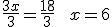
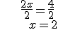
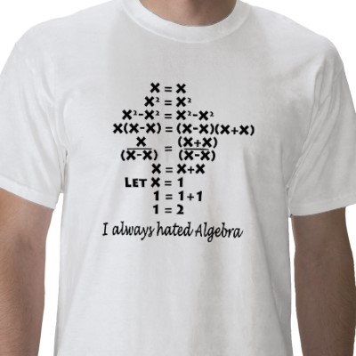
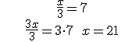
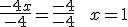

Ecuaciones
Ecuaciones
Una ecuación es una igualdad algebraica que es cierta sólo para algunos valores de las variables. Estos valores se llaman soluciones de la ecuación.
Hay dos miembros en una ecuación con una expresión algebraica en cada uno.
Cada monomio es un término de la ecuación.
“x” se llama la variable o la incógnita.
El grado de una ecuación es el mayor de los grados de su términos. Si es 1, se llama ecuación lineal o de primer grado y si es 2, ecuación cuadrática o de segundo grado.
Ejemplos:
• x2 – 3x + 1 = 5x -17 es una ecuación cuadrática
• x + 5 – 3(x + 2) = 5x es una ecuación lineal
Dos ecuaciones son equivalentes si tienen las mismas soluciones.
3x = 6 es equivalente a x = 2
Resolver una ecuación es encontrar la ecuación equivalente más simple que nos dé la solución.
Para obtener una ecuación equivalente sólo podemos hacer dos operaciones básicas:
–Sumar o restar la misma expresión en ambos lados de la ecuación.
–Multiplicar o dividir por el mismo número (excepto cero) en ambos lados de la igualdad.
Ejemplo 1: Para resolver la ecuación 2 + x = 5
–Restamos 2 en ambos lados 2 + x – 2 = 5 – 2
–Y obtenemos la solución x = 3
Ejemplo 2: Para resolver la ecuación 3x = 18
–Dividimos por 3 en los dos lados

Ejemplo 3: Para resolver la ecuación 2x + 5 = 9
– Restamos 5 en los dos lados 2x + 5 – 5 = 9 – 5
- Tenemos 2x = 4 y dividimos por 2
Ejercicio: Encuentra el error

Ejemplo 4: Para resolver la ecuación x – 3 = -21
–Sumamos 3 a ambos miembros x – 3 + 3 = – 21 + 3
–Y obtenemos la solución x = -18
Ejemplo 5: Para resolver la ecuación:
–Multiplicamos por 3 en ambos lado

Ejemplo 6: Para resolver la ecuación -3x + 5 = x + 1
–Restamos x en ambos lados -3x + 5 – x = x + 1 - x
–Tenemos -4x + 5 = 1 ; restamos 5: -4x = -4
–Dividimos por -4:

NOTA: Como podemos ver, cuando eliminamos un número o expresión en un lado, éste aparece en el otro lado con la operación inversa: si está sumando, aparece restando; si está restando, aparece sumando; si está multiplicando, dividiendo; y si está dividiendo aparece multiplicando.
Obra publicada con Licencia Creative Commons Reconocimiento No comercial Compartir igual 4.0